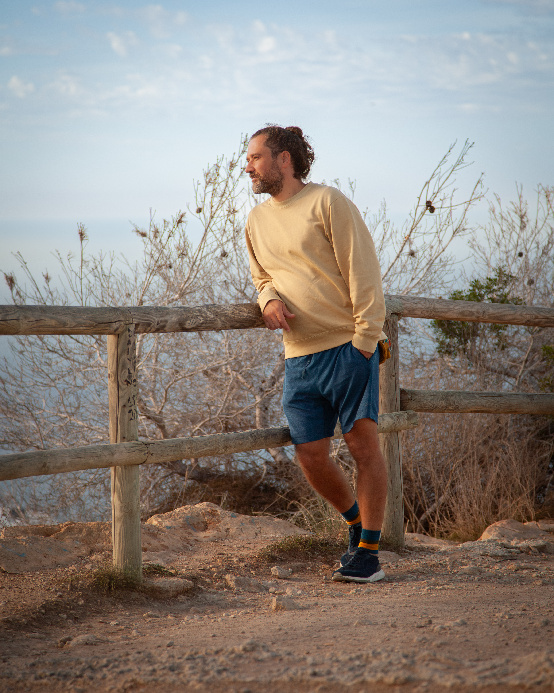
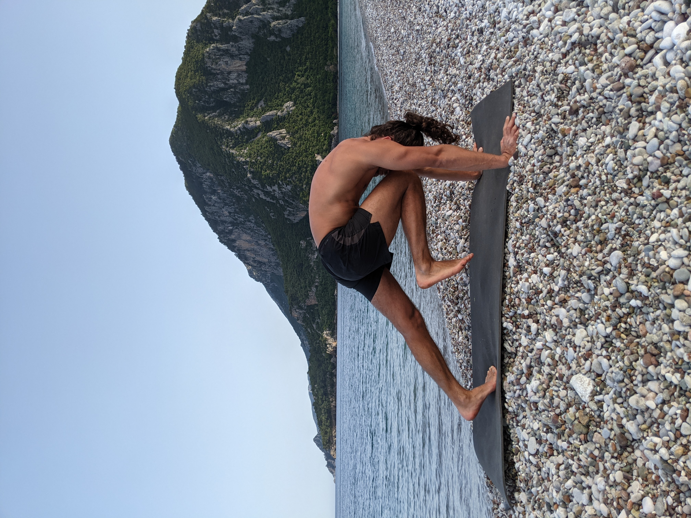
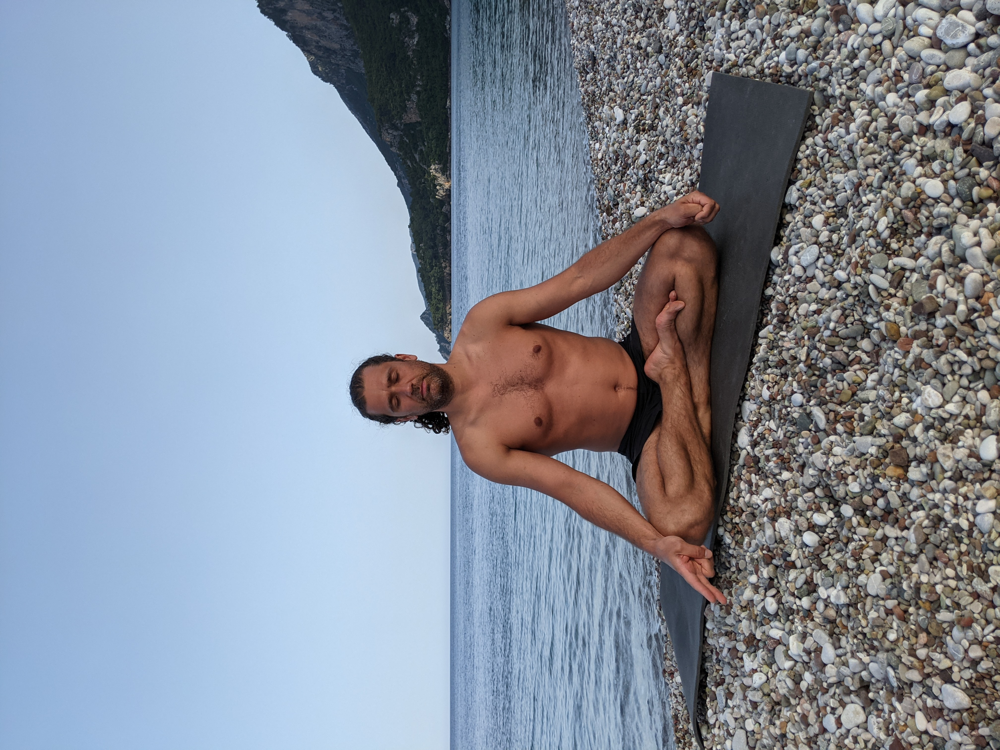

Настройка тела. Покой разума.
Сохранить баланс, найти равновесие и ясно увидеть свои цели. Это час, который станет точкой опоры, на которой держится вся твоя неделя. Твой час только для себя, который ты вложишь в силу тела, покой духа и чистоту ума.
Записаться на знакомство-диагностику (15 мин)С какими проблемами вы пришли?
Бизнесменам & C-Level
Перенапряжение шеи и поясницы от сидячей работы, нарушения образа жизни, избыточный стресс.
Спортсменам и любителям
Падель, теннис, забеги: неприятные ощущения в суставах и мышцах после нагрузок, затянувшееся восстановление.
Бизнес-леди в декрете
Хронические спазмы мышц, дискомфорт в лопатках и пояснице, усталость, недосып, необходимость «часа для себя».
Кто стоит за системой
- Специалист по физической культуре, йоге, телесно-ориентированному коучингу.
- 20+ лет практики в дискурсе восточных оздоровительных систем (ТКМ, йога, Нейгун, ушу).
- Опыт работы в кабинете рефлексотерапии и остеопатии.
- Подход без мистики: понимание связи между работой ЦНС, мышц и ментальным состоянием.
«Моя задача — не просто снять симптом, а дать вам инструмент управления собственным телом, ресурсом и жизнью».

Три столпа системы
Телесная база
Силовая выносливость, коррекция движений, укрепление кора без рисков и тяжелых штанг.
Принципы ТКМ
Приведение тела и сознания к балансу через работу с меридианами, акупрессуру и настройку питания.
Нейгун & Психология
Дыхательные практики, работа с вниманием, глубокое расслабление. Избавляемся от тревоги и находим покой.
Форматы занятий
Индивидуальные Тренировки
(Онлайн или Офлайн)
Точка равновесия, на которой держится ваша неделя. Диагностика, упражнения и коучинг новых паттернов поведения.
Групповые практики
(Малые группы)
Поддержание рабочего ритма в команде единомышленников. Прямо здесь и сейчас, без траты времени на дорогу.
Выездные семинары
Погружение в практики на природе, восстановительные ретриты.



Тренировки, которые меняют вашу жизнь
Сохранять баланс и искать равновесие. Это не просто упражнения, а ваш личный ресурс для достижения целей, силы тела и чистоты ума.
Авторские статьи и материалы Геннадия
Воздействие массажа на нервную систему
Паттерн шага. Как правильно ходить
Описание тренировки
Дыхание. Пранаямы
Теория шавасаны
Самомассаж лица
Запись на встречу / тренировку
Выберите удобный формат и время для бесплатной 15-минутной диагностики или сеанса.